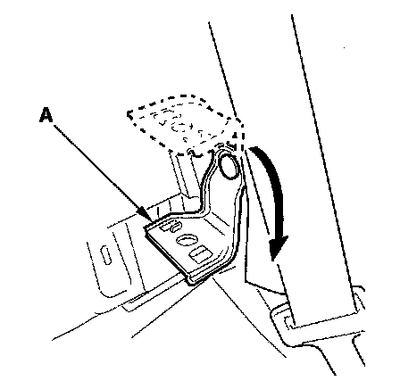
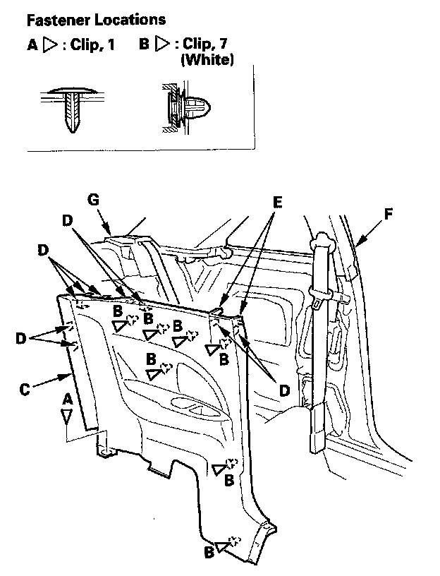

Trim Removal/Installation - Rear Side Area
Trim Removal/Installation - Rear Side AreaSpecial Tools Required
KTC trim tool set SOJATP2014 *
* Available through the American Honda Tool and Equipment Program
2-door
SRS components are located in this area. Review the SRS component locations and the precautions and procedures before doing repairs or service.
NOTE:
- Put on gloves to protect your hands.
- Take care not to bend or scratch the trim and panels.
- Use the appropriate tool from the KTC trim tool set to avoid damage when prying components.
1. Remove these items:
- Door sill trim
- Rear seat-back:
- Fold down
- Split fold down
- Rear seat cushion

2. Lower the rear seat pivot bracket (A).

3. Release the clip (A). Detach the clips (B) by pulling the rear side trim panel (C) back, release the upper hooks (D) and tabs (E) from the quarter pillar trim (F) and the rear shelf extension (G), then remove the trim panel.
4. Install the panel in the reverse order of removal, and note these items:
- Check if the clips are damaged or stress-whitened, and if necessary, replace them with new ones.
- Push the clips into place securely.